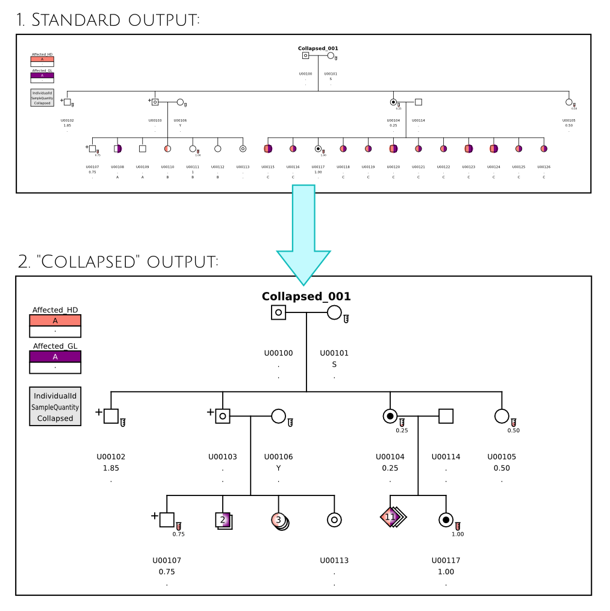
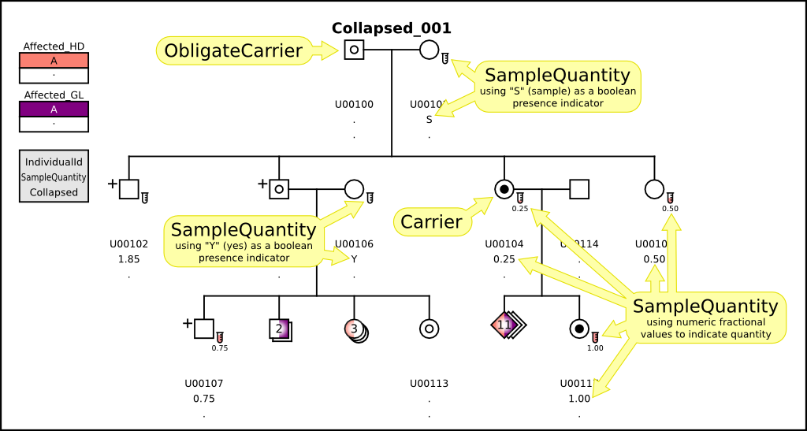
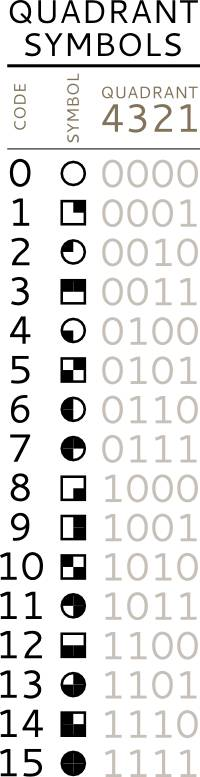

Introduction to the Testing Framework
Madeline is a capable pedigree drawing tool with many features and options. This resource provides a large set of categorized test pedigrees that are used to both document and verify Madeline's feature set.
This resource may be updated frequently in order to document and provide tests for new features, so be sure to keep up to date by obtaining the latest version of Madeline and this testing framework from Madeline's code repository.
How Testing is Performed. A script is used to extract the COMMAND LINEs directly from this web document. These command lines not only reference the correct data files, but also contain specific command-line switches that are necessary for testing specific features. Once the script has obtained the set of command lines, the -S switch is added to each command line to insure that the output SVG results will be scalable so that they can be more easily embedded in this web document. Data files are stored in the data directory, so the data file names are prefixed with the proper relative paths, and then the command lines are executed to produce the output that you see here.
Results and Comparisons to Expected Output. The results of running the script are stored in the results subdirectory of this testing framework. The expected results are stored in the expected subdirectory of the testing framework. The test script essentially runs the diff command to compare the results against the expected result set. When results are identical, the script reports a "PASS" in green. When the results differ, the script reports a "DIFFER" in red.
Note that there are many reasons why the output SVGs may differ, so a "DIFFER" does not necessarily mean that the program has failed to produce suitable output. For example, the program generates randomized string identifiers (IDs) for missing parents, so the "names" of those unnamed parents will change every time the program is invoked. This currently occurs, for example, in the missing_parent test pedigrees because randomized IDs are generated for anonymous parents.
In addition, the way that Madeline produces SVG output may change between versions. The layout of certain pedigrees may also change over time as Madeline becomes better at optimizing chart layouts. The test script report, while useful, is not capable of interpreting differences in the same way as you, a human, are able to do. Thus, the best thing to do is to visually inspect the results presented here, paying special attention to pedigrees that are reported to "DIFFER".
What should I do if I only see "SVG FILE NOT FOUND" messages instead of the SVG drawings? This means that the testing script has not been run yet. You just need to run the script and then reload this web page!
How do I run the script? After you have properly installed Madeline on your machine, in a command-line environment, navigate to the testing_framework/results subdirectory. In that directory you will find a script named process.sh. From a BASH shell environment, run this script by typing:
./process.sh
... or, if necessary:
bash ./process.sh
Note that a modern "unixy" terminal environment with the BASH shell is required. (Mac OS X, Linux, and the CYGWIN emulation environment on Microsoft Windows all provide what is needed). If everything goes smoothly, you should see a lot of output on the terminal as the script runs. This will be followed by the PASS/DIFFER reports. After that, just reload this page in your browser and enjoy!
Summary Report
Adoptions
Madeline 2.0 PDE draws curved connectors in the background showing the placement of children adopted by relatives or others in a pedigree. Madeline 2.0 uses the Pedigree Standardization Task Force (PSTF) recommended graphics for children who are "adopted in". For children who are adopted in, the square brackets face inward. For showing "adopted out", Madeline uses square brackets that face outward.
Madeline identifies "adopted in" children with individual ids prefixed with a plus sign, "+". "Adopted out" individual ids must be prefixed with a negative sign, "-".
Adoptions 001
In this pedigree in the family on the left, a granddaughter A00188 is adopted by the grandparents after the death of both biological parents. Additionally, a son A00185 is adopted out to another family, shown on the right. In the family on the right, the grandson A00196 is adopted into his paternal aunt's family.
DATA: adoptions_001.data
COMMAND LINE:
RESULT FILE: adoptions_001_pedigree.svg
{kind=link}
Collapsed Pedigrees
The ability to "collapse" a group of siblings into a single representative icon is a fairly recent addition to Madeline.
Collapsed 001
Madeline 2.0 PDE supports a data field called Collapsed that allows you to "collapse" a group of siblings in a nuclear family into a single representative individual:
To use this option, first you need to add a Collapsed column in your data table and then identify the "collapse groups" using unique identifiers, such as "A" for the first group, "B" for the second group, "C" for the third group, etc.
After that, all you need to do is use the "-k" or "--collapsed" flag when you run Madeline. If individuals in the group differ in gender, the program will automatically use a diamond to represent the group. Affection status will be based on the affection status (or multiple affection statuses) of the first individual within each group as seen by the program. A number will be printed in the center of the individual icon indicating the number of individuals represented by that icon.
Currently, the implementation is somewhat limited in that collapsing is only supported for terminal individuals without children. The program's behavior is undefined if you try to collapse other individuals. Nevertheless, this new functionality can be extremely useful for collapsing large pedigrees into more compact forms.
...
This same pedigree is also used to test the SampleQuantity, Carrier, and ObligateCarrier fields:
(1) The ObligateCarrier is a boolean field. When ObligateCarrier is true, individuals are drawn with a small open circle in the middle. In contrast, individuals with a true in the Carrier field are drawn with a filled circle. Used together, these two fields allow you to distinguish between individuals who have been confirmed as carriers based on physical samples, versus individuals who are deduced to be obligate carriers based on inheritance but for whom confirmatory samples may not be available.
(2) The SampleQuantity field is similar in purpose but more flexible than the previously-available Sampled field. In SampleQuantity, you can specify either a boolean value or a numeric fractional value. If you specify a boolean value such as "Y" for yes or "S" for sample, the program will draw a small test tube to indicate that you have a sample, but the volume or quantity of the sample is unspecified.
Alternatively, if you specify a numeric value between 0.00 to 1.00 inclusive, then the test tube will be drawn filled proportionally. (If you specify a number beyond 1.00, the test tube will still be drawn, but you will receive a warning and the test tube will not be filled with color). This field thus allows you to visually track available sample quantities both generally and with precision.
DATA: collapsed_001.data
COMMAND LINE:
RESULTS FILE: collapsed_001_pedigree.svg
{kind=link}
Color Pedigrees
When a data file contains more than one Affected_xxx field, Madeline automatically divides the icon shading region into "pie slice" sections and automatically switches into color mode for any affection column with two or more non-missing categorical levels. (Note that the missing level, ".", is always printed without color, i.e., with a white background). When custom colors are not specified, Madeline automatically uses bichromatic color series. The bichromatic color series were selected to be as contrasting as possible for people with normal color vision. The letter or symbol indicating each level of an affection variable will be printed in black ink if the background color is a light color, and in white ink if the background color is a dark color.
The distinctness in color between adjacent levels within a single bichromatic series should be quite clear for people with normal vision when there are only 2-4 levels. When there are more than 4 levels for any one affection variable, the distinctness in the color value between adjacent levels naturally declines. This is equally true for grayscale coloring.
Note that it is possible to force a pedigree with multiple affection variables to be printed in black-and-white using the optional --bw or -b switch. If you want absolute control over colors, then just use the --custom-icon-colors or -C switch as described in the Custom Color section.
Color 001
In this pedigree there are two affection columns, Affected and Affected_T. Madeline automatically divides the icons into pie-sliced regions. In the absence of custom color assignments, bichromatic color series are automatically assigned to each categorical variable. The first affected column appears on the left, the second on the right.
DATA: color_001.data
COMMAND LINE:
RESULT FILE: color_001_pedigree.svg
{kind=link}
Color 002
In this pedigree there are three affection columns, Affected, Affected_A and Affected_B. Madeline automatically divides the icons into pie-sliced regions. Bichromatic color series are automatically assigned to each categorical variable. The first categorical variable always occupies the upper left-hand third. The second variable follows clockwise on the upper right. The third variable follows clockwise at the bottom.
DATA: color_002.data
COMMAND LINE:
RESULT FILE: color_002_pedigree.svg
{kind=link}
Color 003
In this pedigree there are five affection columns. In practice, more than four affection columns may make the graph difficult to read. However this example demonstrates that Madeline imposes no limit on the number of pie-sliced regions into which icons may be divided. Bichromatic color series are automatically assigned to each categorical variable. Variables are arranged visually from the upper left-hand corner and proceed in order clockwise.
DATA: color_003.data
COMMAND LINE:
RESULT FILE: color_003_pedigree.svg
{kind=link}
Complex
Test pedigrees in this group exhibit a combination of features such as multiple spouses, multiple descent trees, consanguinity, and twin groups.
Complex 001
This data set contains a complex pedigree with multiple descent trees, twin groups, and consanguinous marriages.
DATA: complex_001.data
COMMAND LINE:
RESULT FILE: complex_001_pedigree.svg
{kind=link}
Complex 002
This data set contains a complex pedigree with multiple descent trees, twin groups, and consanguinous marriages.
DATA: complex_002.data
COMMAND LINE:
RESULT FILE: complex_002_pedigree.svg
{kind=link}
Compression Tests
Madeline automatically recognizes three compression formats:
- pkzip
- gzip
- bzip2
The following use one pedigree to test these different compression formats:
Compress 000
This data set set is compressed using the PKZIP format.
DATA: compress_000.data.zip
COMMAND LINE:
RESULT FILE: compress_000_pedigree.svg
{kind=link}
Compress 001
This data set set is compressed using the GZIP format.
DATA: compress_001.data.gz
COMMAND LINE:
RESULT FILE: compress_001_pedigree.svg
{kind=link}
Compress 002
This data set set is compressed using the BZIP2 format.
DATA: compress_002.data.bz2
COMMAND LINE:
RESULT FILE: compress_003_pedigree.svg
{kind=link}
Consanguinous Pedigrees
This set of pedigrees test Madeline's ability to handle consanguinous relationships such as uncle-niece or cousin-cousin pairings.
Consanguinous 001
This data set contains a consanguinous pedigree. This data set is used to test the drawing of a consanguinous mating between first cousins.
DATA: consanguinous_001.data
COMMAND LINE:
RESULT FILE: consanguinous_001_pedigree.svg
{kind=link}
Consanguinous 002
This data set contains a consanguinous pedigree. This data set is used to test the drawing of uncle-niece consanguinous matings occurring in subsequent generations.
DATA: consanguinous_002.data
COMMAND LINE:
RESULT FILE: consanguinous_002_pedigree.svg
{kind=link}
Consanguinous 003
This data set contains a consanguinous pedigree showing the rare case of an aunt marrying a nephew.
DATA: consanguinous_003.data
COMMAND LINE:
RESULT FILE: consanguinous_003_pedigree.svg
{kind=link}
Consanguinous 004
This data set contains a consanguinous pedigree. An uncle-niece marriage is followed by a marriage between first cousins in the offspring generation.
DATA: consanguinous_004.data
COMMAND LINE:
RESULT FILE: consanguinous_004_pedigree.svg
{kind=link}
Consanguinous 005
In this consanguinous pedigree there are three consanguinous marriages. This example also has multiple descent trees.
DATA: consanguinous_005.data
COMMAND LINE:
RESULT FILE: consanguinous_005_pedigree.svg
{kind=link}
Consanguinous 006
In this consanguinous pedigree, a grand uncle marries a grand niece. This demonstrates that consanguinous matings which skip a generation can be drawn by the program.
DATA: consanguinous_006.data
COMMAND LINE:
RESULT FILE: consanguinous_006_pedigree.svg
{kind=link}
Consanguinous 007
In this consanguinous pedigree a great-grand uncle marries a great-grand niece. This demonstrates that consanguinous matings which skip two generations can be drawn by the program.
DATA: consanguinous_007.data
COMMAND LINE:
RESULT FILE: consanguinous_007_pedigree.svg
{kind=link}
Consanguinous 008
In this consanguinous pedigree, a marriage between second cousins is shown.
DATA: consanguinous_008.data
COMMAND LINE:
RESULT FILE: consanguinous_008_pedigree.svg
{kind=link}
Consanguinous 009
In this consanguinous pedigree, a marriage between third cousins is shown.
DATA: consanguinous_009.data
COMMAND LINE:
RESULT FILE: consanguinous_009_pedigree.svg
{kind=link}
Consanguinous 010
This is the consanguinous pedigree used in the published Madeline 2.0 PDE paper. In the paper, it is labeled as pedigree "F1000", but is labeled "consanguinous_010" here. The pattern of inheritance in the family suggests a recessive or possibly a complex disease. The figure description from the paper follows:
“Sample pedigree with four consanguinous loop (CL) matings. Direct connecting lines are drawn for three of the four CL matings. However the fourth CL mating would require a line crossing and so individual T04 has been drawn in two locations and marked directly below the icon with a unique label "A" to indicate the repeat. Circled numbers indicate birth order within sibships. Dates of birth are also displayed.”
Curved dashed background connectors were added as a feature in the program at a later date after the paper had already been published. A curved background connector is now shown connecting father T04.
DATA: consanguinous_010.data
COMMAND LINE:
RESULT FILE: consanguinous_010_pedigree.svg
{kind=link}
Consanguinous 011
In this consanguinous pedigree, a marriage between a great-great-great grandfather and great-great-great grand niece is shown. While impossible for humans and probably many other species, the pedigree demonstrates that Madeline's algorithm for consanguinity detection works across any number of generations.
DATA: consanguinous_011.data
COMMAND LINE:
RESULT FILE: consanguinous_011_pedigree.svg
{kind=link}
CS+MS: Consanguinous Multiple Spouse Pedigrees
These pedigrees have both consanguinity and multiple spouses present.
Consanguinous Multiple Spouse 001
This data set has both consanguinous and multiple spouse matings present. Male m103 is married to both a female founder m106 as well as to his own niece m102.
DATA: consanguinous_multiple_spouse_001.data
COMMAND LINE:
RESULT FILE: consanguinous_multiple_spouse_001_pedigree.svg
{kind=link}
Consanguinous Multiple Spouse 002
This data set has both consanguinous and multiple spouse matings present. m108 has three wives, one of whom is his niece. In this pedigree we also see the rare case (for humans) of an aunt m103 married to her nephew, m102.
DATA: consanguinous_multiple_spouse_002.data
COMMAND LINE:
RESULT FILE: consanguinous_multiple_spouse_002_pedigree.svg
{kind=link}
Consanguinous Multiple Spouse 003
This data set has both consanguinous and multiple spouse matings present. The consanguinous marriage is between half-siblings in this example.
DATA: consanguinous_multiple_spouse_003.data
COMMAND LINE:
RESULT FILE: consanguinous_multiple_spouse_003_pedigree.svg
{kind=link}
Consanguinous Multiple Spouse 004
This data set has both consanguinous and multiple spouse matings present. Individual 11 is married to two first cousins. The marriage to individual 10 would result in line crossing, and thus individual 10 is marked with an "A" and drawn twice.
DATA: consanguinous_multiple_spouse_004.data
COMMAND LINE:
RESULT FILE: consanguinous_multiple_spouse_004_pedigree.svg
{kind=link}
Curved Connectors
In May of 2009, curved background connectors were added to Madeline to make complex pedigrees easier to understand.
Curved Connectors 001
This test pedigree was the one used when curved background connectors were added to Madeline.
DATA: curved_connectors_001.data
COMMAND LINE:
RESULT FILE: curved_connectors_001_pedigree.svg
{kind=link}
Custom Color Pedigrees
Custom Color 001
Madeline 2.0 PDE supports named colors and the assignment of colors to specific levels of a categorical variable. Use "--custom-icon-colors", or "-C" for short.
The 140 web color names recognized by modern web browsers are now also recognized by Madeline. You can also specify custom colors using HTML/CSS hex syntax, such as "#f00" or "#ff0000" for red. And you can freely mix-and-match hex syntax and named colors.
Each color in a custom color series is separated by a comma. To assign colors to specific keys, use the equal sign, e.g., "NORMAL=lightgreen,AFFECTED=red,INDETERMINATE=gray", etc.
To specify colors for multiple "Affected_xxx" variables, separate each series by a semicolon. This is illustrated by the command line provided below for this test pedigree.
DATA: custom_color_001.data
COMMAND LINE:
RESULTS FILE: custom_color_001_pedigree.svg
{kind=link}
Descent Trees
These pedigrees test Madeline's handling of multiple descent trees.
Descent Tree 001
This data set is used to test the drawing of a multiple descent tree pedigree with two descent trees.
DATA: descent_tree_001.data
COMMAND LINE:
RESULT FILE: descent_tree_001_pedigree.svg
{kind=link}
Descent Tree 002
This data set is used to test the drawing of a multiple descent tree pedigree with three descent trees.
DATA: descent_tree_002.data
COMMAND LINE:
RESULT FILE: descent_tree_002_pedigree.svg
{kind=link}
Descent Tree 003
This data set is used to test the drawing of a multiple descent tree pedigree with four descent trees.
DATA: descent_tree_001.data
COMMAND LINE:
RESULT FILE: descent_tree_003_pedigree.svg
{kind=link}
Descent Tree 004
DATA: descent_tree_004.data
COMMAND LINE:
RESULT FILE: descent_tree_004_pedigree.svg
{kind=link}
Descent Tree 005
DATA: descent_tree_005.data
COMMAND LINE:
RESULT FILE: descent_tree_005_pedigree.svg
{kind=link}
Descent Tree 006
DATA: descent_tree_006.data
COMMAND LINE:
RESULT FILE: descent_tree_006_pedigree.svg
{kind=link}
Descent Tree 007
DATA: descent_tree_007.data
COMMAND LINE:
RESULT FILE: descent_tree_007_pedigree.svg
{kind=link}
Descent Tree 008
DATA: descent_tree_008.data
COMMAND LINE:
RESULT FILE: descent_tree_008_pedigree.svg
{kind=link}
Descent Tree 009
DATA: descent_tree_009.data
COMMAND LINE:
RESULT FILE: descent_tree_009_pedigree.svg
{kind=link}
Descent Tree 010
DATA: descent_tree_010.data
COMMAND LINE:
RESULT FILE: descent_tree_010_pedigree.svg
{kind=link}
Descent Tree 011
DATA: descent_tree_011.data
COMMAND LINE:
RESULT FILE: descent_tree_011_pedigree.svg
{kind=link}
Donor Symbology (Incomplete Support)
Madeline now accepts an optional column in a data table called "Donor". Madeline currently recognizes the following codes in the donor column:
- sperm (S)
- ovum (O)
- sperm and ovum (SO)
- ovum and sperm (OS) (this is identical to "sperm and ovum (SO)" above)
- gestational (G)
- mitochondrial (M)
Because of drawing limitations in the current version of Madeline, it is not yet possible to show so-called "3 parent" assisted reproductive technology (ART) situations. However, future support is planned for at least two cases:
- Gestational Donor. A gestational donor carries a pregnancy for a couple using the couple's egg and sperm.
- Mitochondrial Donor (PNT or MST). As of this writing, pronuclear transfer (PNT) and maternal spindle transfer (MST) technologies have been tested in macaques and mice, yielding apparently normal offspring. On February 24, 2015, the UK House of Lords approved legislation permitting "3-person IVF" (in-vitro fertilization) techniques directly in fertility clinics without human clinical trials and with no required follow-up of any resulting children.
NOTA BENE: Donor codes need to be placed on the offspring, not on the parents, because the offspring uniquely identify the parents.
Donor 001
This pedigree tests how Madeline draws the symbols used to indicate sperm, ovum, gestational, and mitochondrial donors. Currently, the symbols exist in Madeline to support gestational and mitochondrial donors, but Madeline cannot show 3-parent situations so these latter two are not yet very useful.
DATA: donor_001.data
COMMAND LINE:
RESULT FILE: donor_001_pedigree.svg
{kind=link}
Format Tests
Madeline currently recognizes five data storage formats:
- Madeline flat file format (MFF)
- Tab delimited
- Madeline XML format (MXML)
- Open Office OASIS XML (i.e., OpenOffice or LibreOffice files with a .ods ending)
- W3C XHTML tables (i.e., HTML tables embedded in web documents, usually with a .html ending)
The following use one pedigree to test these different data storage formats:
Format 000
This data set set is stored in the MADELINE XML (MXML) format.
DATA: format_000.data
COMMAND LINE:
RESULT FILE: format_000_pedigree.svg
{kind=link}
Format 001
This data set set is stored in a TAB DELIMITED format.
DATA: format_001.data
COMMAND LINE:
RESULT FILE: format_001_pedigree.svg
{kind=link}
Format 002
This data set set is stored in MADELINE FLAT FILE (MFF) format.
DATA: format_002.data
COMMAND LINE:
RESULT FILE: format_002_pedigree.svg
{kind=link}
Format 004
This data set set is stored in OpenDocument OASIS XML format.
DATA: format_004.ods
COMMAND LINE:
RESULT FILE: format_004_pedigree.svg
{kind=link}
Format 005
This data set set is stored in W3C XHTML TABLE format. Such a table may be embedded in a web document. This can be very useful since one can easily include additional notes and commentary in a web document alongside the data.
DATA: format_005.html
COMMAND LINE:
RESULT FILE: format_005_pedigree.svg
{kind=link}
Missing Parents
Missing parents are drawn using a dashed line and may be present in a pedigree in two ways. In the first case, a parent is named in the Father or Mother column but no row exists for that parent in the data file. In the second case, only a single parent is named for one or more children. In these cases, Madeline automatically generates a random identifier for the missing parent. In doing so, Madeline makes the assumption that all the children of the present spouse are also children of a single missing spouse. In other words, Madeline assumes that siblings are full siblings and not half-siblings. To show half-siblings, parents must be fully specified.
Missing Parents 001
This pedigree tests how Madeline handles missing parents.
DATA: missing_parents_001.data
COMMAND LINE:
RESULT FILE: missing_parents_001_pedigree.svg
{kind=link}
Missing Parents 002
This pedigree tests how Madeline handles missing parents.
DATA: missing_parents_002.data
COMMAND LINE:
RESULT FILE: missing_parents_002_pedigree.svg
{kind=link}
Missing Parents 003
This pedigree tests how Madeline handles missing parents.
DATA: .data
COMMAND LINE:
RESULT FILE: missing_parents_003_pedigree.svg
{kind=link}
Multiple Spouses
The following check Madeline's drawing of multiple spouses.
Multiple Spouse 001
This data set is used to test the drawing of a multiple spouse pedigree. One man is married to two women and there are a total of seven offspring.
DATA: multiple_spouse_001.data
COMMAND LINE:
RESULT FILE: multiple_spouse_001_pedigree.svg
{kind=link}
Multiple Spouse 002
This data set is used to test the drawing of a multiple spouse pedigree. Both men in this pedigree have multiple spouses. One has five spouses, the other four spouses.
DATA: multiple_spouse_002.data
COMMAND LINE:
RESULT FILE: multiple_spouse_002_pedigree.svg
{kind=link}
Multiple Spouse 003
This data set is used to test the drawing of a multiple spouse pedigree. One man is married to three women, and one of the offspring is also married.
DATA: multiple_spouse_003.data
COMMAND LINE:
RESULT FILE: multiple_spouse_003_pedigree.svg
{kind=link}
Multiple Spouse 004
This data set is used to test the drawing of a multiple spouse pedigree. One man is married to eleven women.
This demonstrates that the program does not impose limitations on the number of spouses that an individual may have.
DATA: multiple_spouse_004.data
COMMAND LINE:
RESULT FILE: multiple_spouse_004_pedigree.svg
{kind=link}
Pregnancies
Pregnancies 001
Users may now include a column called Pregnancy in order to indicate pregnancies. In order to avoid confusion, pregnancies are displayed using a unique double-struck P, “ℙ”. Since the “ℙ” is printed in the center of the icons, be sure to set the --noiconlabels flag so that the “ℙ” will not over-print on top of affection status code letters.
DATA: pregnancies_001.data
COMMAND LINE:
RESULT FILE: pregnancies_001_pedigree.svg
{kind=link}
Quadrant Shading
Quadrant 001
Madeline supports quadrant shading of icons based on numerical or bit pattern codes stored in the first Affected column encountered (i.e., in the Affected_quadrant column in this test data file).
To use this feature, pass "--quadrantshading" or "-q" as a command line argument. The first Affected field encountered in the data set will be used. Any additional Affected fields will be ignored.
Integer codes in the range from 0-15 inclusive produce the quadrant shading patterns shown in the table below. Note that zero produces an unshaded pattern. Non-integer codes as well as integer codes outside of the range of 0-15 will simply be displayed in the middle of the icon without a shading pattern.
However four-digit integers consisting of only 1s and 0s are interpreted as binary bit pattern flags. So, starting with the least significant binary digit, "0001" will shade the first quadrant, "0010" will shade the second quadrant, "0100" will shade the third quadrant, "0011" will shade the upper two quadrants, and so on, as illustrated in the table above.
This is illustrated in the pedigree here, where:
- The shading code for individual 17 is a zero
- The code for individual 16 is "16" for which no shading pattern exists
- The code for individual 18 is a missing value, and thus a dot is printed
- The code for individual 19 is the letter "I" which is thus printed as shown
- Individuals 09,10,11,12 and 13 are assigned binary bit-patterns.
- The code for individual 20 is "@" which is likewise just printed as shown since no other interpretation exists for this symbol in this context.
NOTA BENE: This is not the only way to shade quadrants in Madeline. The other option, which is also the more flexible option, is to have four individual Affected_xxx columns. You can assign specific colors to specific levels in each of those Affected_xxx columns. This is illustrated in the Custom Color pedigrees.
DATA: quadrant_001.data
COMMAND LINE:
RESULT FILE: quadrant_001_pedigree.svg
{kind=link}
Simple Pedigrees
The following test various aspects of Madeline 2.0's ability to draw simple pedigrees.
Simple 001
This data set contains a simple nuclear family with five siblings, of which two are affected. Four of the siblings are sampled, one is unsampled. The proband is marked. Two of the siblings have approximated dates of birth: the month is known, but the precise day is unknown. Madeline2 treats these dates as ranged dates. Both parents are missing from the data set: Madeline2 is smart enough to create them as virtual individuals.
This pedigree tests:
- Handling of missing parents when both parents are not present in the data file.
- Display of icons, including gender unknown individuals.
- Basic icon shading.
- Display of sampled individuals.
- Display of proband.
- Display of data labels.
- Display of encircled birth-order numerals.
- Display of ranged dates
DATA: simple_001.data
COMMAND LINE:
RESULT FILE: simple_001_pedigree.svg
{kind=link}
Simple 002
This data set contains a simple nuclear family with 13 offspring. The affection variable records unaffected (U), moderate (M), severe (S) and unknown/missing (.) condition states.
This pedigree tests:
- Large number of offspring in a single nuclear family.
- Categorical Affected variable with more than two levels.
- --color switch.
DATA: simple_002.data
COMMAND LINE:
RESULT FILE: simple_002_pedigree.svg
{kind=link}
Simple 003
This simple pedigree data set contains multiple generations. In most of the generations there is only one offspring in a nuclear family.
This pedigree demonstrates how single married offspring are drawn. A single unmarried offspring is drawn centered directly below both parents. But when married, a single offspring is shifted so the nuclear family subtree remains centered.
DATA: simple_003.data
COMMAND LINE:
RESULT FILE: simple_003_pedigree.svg
{kind=link}
Simple 004
This is a simple pedigree which contains non-ASCII Unicode strings. In addition to having Chinese name strings, the Gender column is coded using "男" and "女" and dates in the DOB column are in Chinese format (e.g., "1999年04月10日").
DATA: simple_004.data
COMMAND LINE:
RESULT FILE: simple_004_pedigree.svg
{kind=link}
Simple 005
This is a simple pedigree which contains non-ASCII Unicode strings. In addition to having Thai strings, the DOB column contains dates in Thai digits.
DATA: simple_005.ods
LABELS FILE: simple_005.labels
COMMAND LINE:
RESULT FILE: simple_005_pedigree.svg
{kind=link}
Simple_006
This is a simple pedigree which demonstrates Madeline 2.0 PED's ability to draw special types of individuals. Special types of "nuclear families" such as marriages without offspring are also shown. Special types of annotations are also shown.
Madeline 2.0 uses a superset of the recommendations of the Pedigree Standardization Task Force (PSTF: Benett, RL et al (1995) Am J Hum Genet. 56: 745-752) for drawing special types of individuals and other special situations.
Spontaneous abortions (SAB) and terminations of pregnancies (TOP) are designated by prefixing individual IDs with the "@" symbol. Madeline follows the PSTF by drawing a triangular icon, but differs from the PSTF recommendations by also drawing a small square or circle below the triangle to indicate gender iconically when known.
Individuals who are adopted out are designated by prefixing individual IDs with "-" minus signs. Here again Madeline 2.0 differs from the PSTF recommendations by making the brackets surrounding the individual face outward in this case. Individuals who are adopted in are designated by prefixing individual IDs with "+" plus signs: brackets in this case face inward (just as in the PSTF recommendations).
A marriage with no offspring due to infertility is realized by inserting a "marker" individual into the database with an ID prefixed by "&". A marriage with no offspring for other reasons is realized in a similar way with a marker individual whose ID is prefixed with a "^" instead.
Inclusion of a Carrier column in the data table allows individuals such as S00110 to be marked as carriers. Inclusion of a Consultand column in the data table allows individuals such as S00111 to be marked as a consultand.
Finally, inclusion of a Superscript column in the data table permits the display of short strings of letters, numerals, or Unicode symbols just off to the right and slightly above the icons. These superscripts provide a convenient way to annotate pedigree drawings with additional information. A random assortment of superscripts is shown in the example reproduced here.
DATA: simple_006.data
COMMAND LINE:
RESULT FILE: simple_006_pedigree.svg
{kind=link}
Twin Groups
The following pedigrees test Madeline's ability to draw twin groups.
Twin 001
This data set contains two siblings (Sandy and Sarah) with the same date of birth but the twin columns are not coded to indicate twins.
This data set tests Madeline's ability to detect twinships based on date of birth alone.
Madeline automatically draws the pair as twins. However, an encircled question mark is displayed because twin zygosity is unknown. The program alerts the user with warning messages. The MZTwin or DZTwin column in the data set should be completed in order to code the data set unambiguously.
DATA: twin_001.data
COMMAND LINE:
RESULT FILE: twin_001_pedigree.svg
{kind=link}
Twin 002
This data set tests the program's rendering of two twin groups in a single nuclear family --one monozygotic and one dizygotic group.
This pedigree is not realistic for humans, but might be possible for mice or other animals.
DATA: twin_002.data
COMMAND LINE:
RESULT FILE: twin_002_pedigree.svg
{kind=link}
Twin 003
This data set tests the program's rendering of a single very large twin group. This pedigree is not realistic for humans, but might be possible for mice or other animals. This pedigree demonstrates that the program does not impose limits on the number of twins in a twin group.
DATA: twin_003.data
COMMAND LINE:
RESULT FILE: twin_003_pedigree.svg
{kind=link}
Twin 004
This data set tests the program's rendering of twin groups where the siblings are married and have children of their own.
DATA: twin_004.data
COMMAND LINE:
RESULT FILE: twin_004_pedigree.svg
{kind=link}
Unconnecteds
The program is expected to identify unconnected individuals in data files for users to review.
Unconnected 001
In this test pedigree, all individuals with IDs in the 100s are unconnected and will not be drawn. The program is expected to issue warning statements in these cases. Only individual “202” (who has parents identified but not actually present in the data file) is considered minimally connected by the program and drawn on the pedigree.
DATA: unconnected_001.data
COMMAND LINE:
RESULT FILE: unconnected_001_pedigree.svg
{kind=link}
{kind=link}